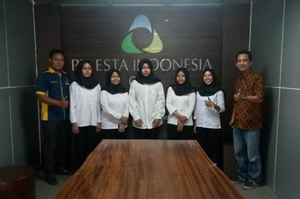

TENTANG BKK
Bursa Kerja Khusus sebagai sub sistem pendidikan nasional yang bertanggungjawab dalam penyiapan SDM tingkat menengah yang handal, berorientasi kepada kebutuhan pasar harus mampu mengembangkan inovasi untuk mempengaruhi perubahan kebutuhan pasar sehingga dapat mewujudkan kepuasan pencari kerja. BKK SMK merupakan salah satu komponen penting dalam mengukur keberhasilan pendidikan di SMK, karena BKK menjadi lembaga yang berperan mengoptimalkan penyaluran tamatan SMK dan sumber informasi untuk pencari kerja. Pemberdayaan BKK SMK merupakan salah satu fungsi dalam manajemen sekolah yaitu sebagai bagian pembinaan terhadap proses pelaksanaan kegiatan BKK SMK yang telah direncanakan dalam upaya mencapai tujuan pendidikan SMK. BKK SMK merupakan salah satu komponen pelaksanaan pendidikan sistem ganda, karena tidak mungkin bisa dilaksanakan proses pembelajaran yang mengarah kepada kompetensi jika tidak ada pasangan industri/usaha kerja, sebagai lingkungan kerja dimana siswa belajar keahlian dan profesional serta etos kerja sesuai dengan tuntutan dunia kerja.

BKK SMK Syafi'i Akrom BKK SMK Syafi'i Akrom 
BKK SMK Syafi'i Akrom |

BKK SMK Syafi'i Akrom 
BKK SMK Syafi'i Akrom 
BKK SMK Syafi'i Akrom |

BKK SMK Syafi'i Akrom 
BKK SMK Syafi'i Akrom 
BKK SMK Syafi'i Akrom |

PENGURUS BKK SMK SYAFI'I AKROM
Struktur organisasi di SMK SYAFI'I AKROM

Abdul Ghofur Faza, S.TPENANGGUNG JAWAB |

Taufiqurrahman, S.PdKETUA |

Teguh Heriyanto, S.PdSTAFF |